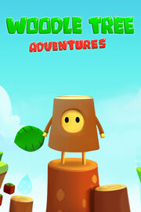

Woodle Tree Adventures
Woodle Tree Adventures
Detalles
|  | |
| Tiempo de juego | 1h 7m 0s |
| Última actividad | 18/06/2014 20:06:31 |
| Añadido | 01/07/2023 11:03:07 |
| Modificado | 01/07/2023 11:04:10 |
| Estado de finalización | Jugado |
| Librería | Steam |
| Fuente | Steam |
| Plataforma | PC (Windows) |
| Fecha de lanzamiento | 02/03/2016 |
| Puntuación de la Comunidad | 66 |
| Puntuación de la Crítica | |
| Puntuación de usuario | |
| Género | Action Adventure Indie |
| Desarrollador | Fabio Ferrara |
| Editor | Chubby Pixel |
| Característica | Achievements Multi-Player Partial Controller Support Remote Play Together Shared/Split Screen Single Player Trading Cards |
| Enlaces | Punto de encuentro Discusiones Guías Noticias Página de la tienda PCGamingWiki Logros |
| Tag | |
Descripción